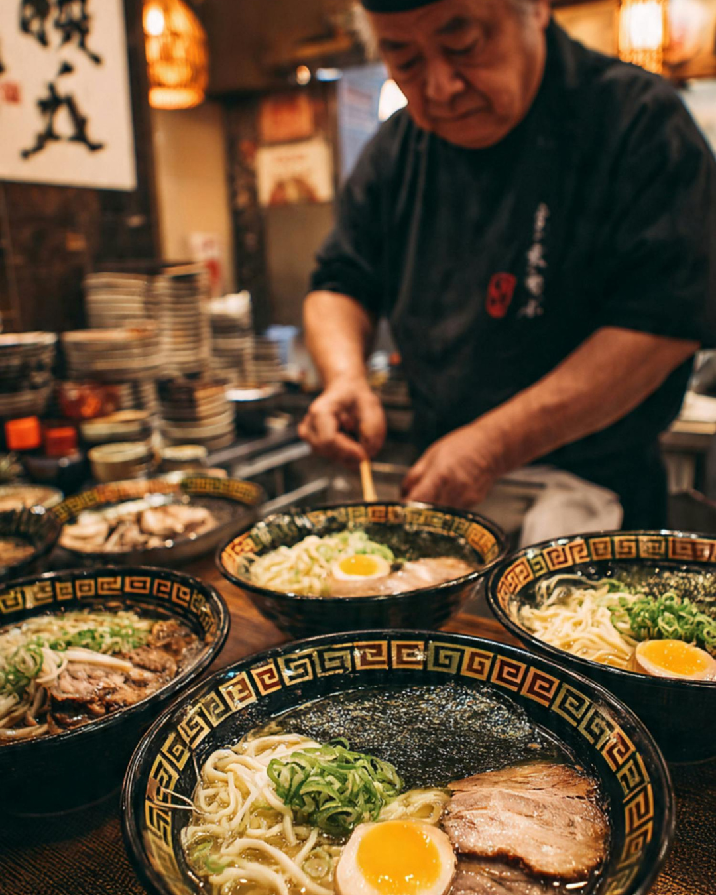

Garlic Tonkotsu Ramen
Rich Pork Broth, Tonkotsu Base, Pork Chashu, Kikurage, Green Onion, Bean Sprouts, Fried Garlic Chips, Seasoned Egg, Nori.
$15.99
From slow-simmered broths to hand-pulled noodles, every bowl at Bakudan is crafted with passion. Three locations in San Antonio.
Slow-simmered for 6½–7 hours every morning
Our recipe was built by a ramen expert who studies in Japan
Bandera • Stone Oak • The Rim

Bakudan Ramen brings the bold flavors of Japan into the heart of Texas with a modern, energetic twist. We blend authentic Japanese ramen-making with Texas hospitality.
Each bowl is a carefully crafted masterpiece, combining traditional techniques with bold flavors.
Rich Pork Broth, Tonkotsu Base, Pork Chashu, Kikurage, Green Onion, Bean Sprouts, Fried Garlic Chips, Seasoned Egg, Nori.
Rich Pork Broth, Miso Base, Chili Oil, Diced Pork Chashu, Green Onion, Bok Choy, Bean Sprouts, Egg, Nori.
Chicken Broth, Shoyu & Shio Base, Chicken Chashu, Kikurage, Cilantro, Lime, Seasoned Egg, Togarashi. Our #1 seller.
Order online for pickup or delivery. Your perfect bowl awaits.
Order Now